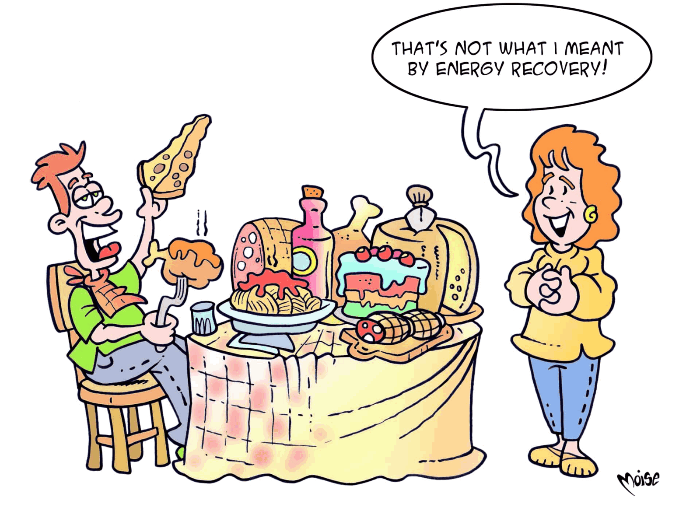

It’s true, the character in this illustration has totally misunderstood
the meaning of energy recovery! Instead, we want to speak to you about the electricity and heat
that can be obtained from a high-tech facility. But which? Place the consonants below in order, put them into the empty boxes
(the vowels are already there in the correct position), and you will find out the answer.